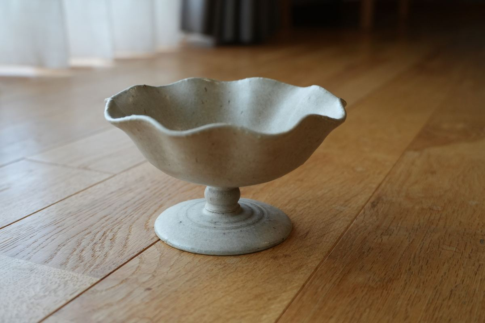
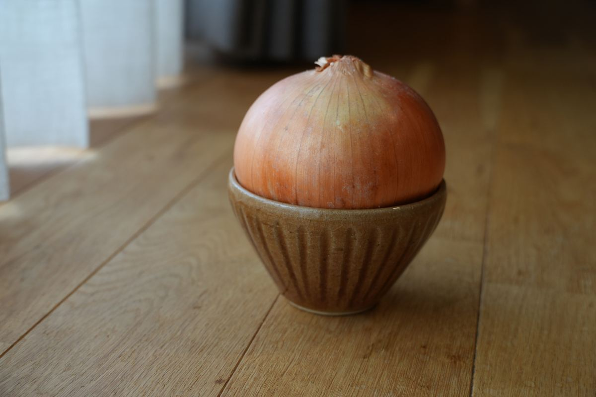
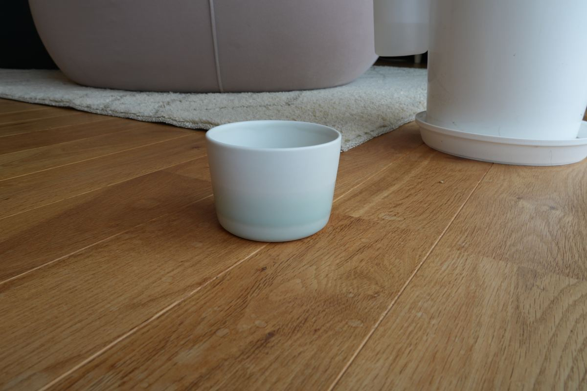

旅先で出会った器のお話や、器にまつわる読みものの一覧です。新しい記事は随時追加していきます。

塩屋で出会った、フルーツのための器
海のそばの町・塩屋。カフェで開かれていた催しで、ひとつの器に出会いました。
2026.09.27

信楽焼の、ヨーグルトのための器
日本六古窯のひとつ、信楽焼。土のぬくもりを感じる小さな器を、毎朝のヨーグルトに。

石本藤雄さんと、Mustakivi のフリーカップ
マリメッコで活躍したデザイナーが、故郷・愛媛で手がけるブランド「Mustakivi」。淡い海色のカップをご紹介します。